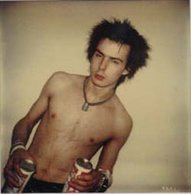
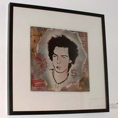
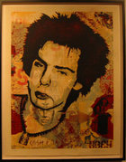

Jim Jocoy
From The Giant: The Definitive Obey Giant Site
From CCA Wattis Institue for Contemporary Arts:
Jocoy's interest in photography began while a student at UC Santa Cruz in 1977, when he started to document the nascent punk scenes in both San Francisco and Los Angeles. Jocoy would often focus solely on the individual habitués and denizens of such now-legendary punk clubs as San Francisco's Mabuhay Gardens and Los Angeles's Masque. Separated from their social context—the crowd—Jocoy's subjects were transformed into specimens or types. His photographs, in turn, took the form of a quasi-anthropological account of an emerging subculture. Jocoy's celebrated book We're Desperate brought together hundreds of his punk-era images and featured an interview between the artist and Thurston Moore and an introduction by fashion designer Marc Jacobs.
Jim Jocoy lives in the Bay Area and works in the Physical Therapy department at UCSF. A co-publisher of the late 1970s punk fanzine Widows and Orphans, Jocoy's photographs of the SF and LA punk scenes have recently been exhibited at Juice, San Francisco, and Aquarius Records, San Francisco, and were included in the Wattis exhibition the Gray Area.
Jocoy's January 14, 1978 photograph of Sid Vicious serves as the basis for Shepard's 2004 large format print Sid Jocoy. This photograph was taken on the night the Sex Pistols broke up after their concert at the Winterland in San Francisco. In an interview conducted by Thom Fowler on February 7, 2003, appearing on the Movie Poop Shoot website, Jocoy had this to say about the picture:
"Thom: Tell me about this picture of Sid Vicious.
Jim Jocoy: That was taken right after the last SEX PISTOLS show ever here in San Francisco. My friend Lamar, she and this girl, Helen Killer, drove their Volkswagen to the Longhorn Saloon in Dallas, Texas to intercept them before they got to the West Coast to hook up with them. When they came to perform here, Lamar asked them to come to her house at Masonic and Haight for a party after the show. I was standing outside on Masonic and Sid pulls up in a cab. First thing he did was whip out his dick and start pissing on the street. My friend was like, “Take a picture.” I knew who he was and I didn’t want to bother him. I saw him later in the hallway at the party and I asked if I could take a photo and he obliged me. I took one shot and that was it. The next day he flew back to New York and overdosed on his way to New York. He and Nancy were living at The Chelsea Hotel where they lived when Sid was accused of killing Nancy Spungen. [See SID AND NANCY starring GARY OLDMAN, or read the book.]" [1]
 |
 |
 |
{kind=link}
{kind=link}
{kind=link}
{kind=link}
© Copyright |
|---|
| This page contains an image or images of drawings, paintings, photographs, prints, or other two-dimensional works of art, for which the copyright is presumably owned by either the artist who produced the image, the person who commissioned the work, or the heirs thereof. It is believed that the use of low-resolution images of works of art for critical commentary on the work in question, the artistic genre or technique of the work of art, or the school to which the artist belongs on the English-language website thegiant.org, hosted on servers in the United States, qualifies as fair use under United States copyright law. |